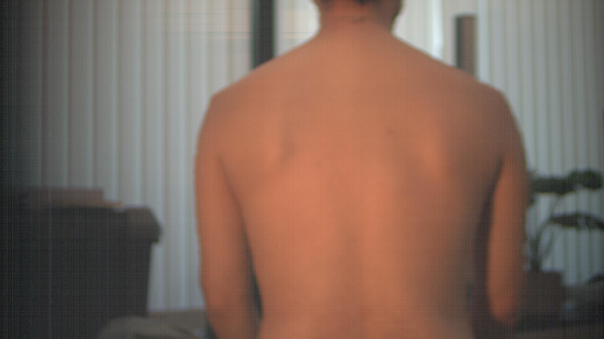
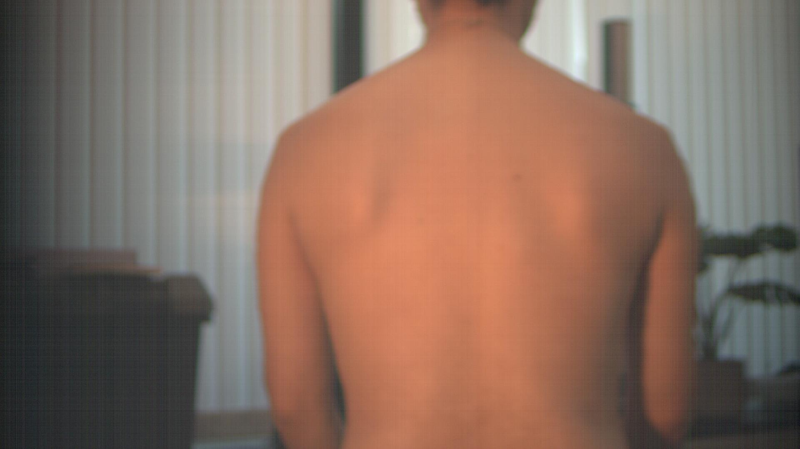
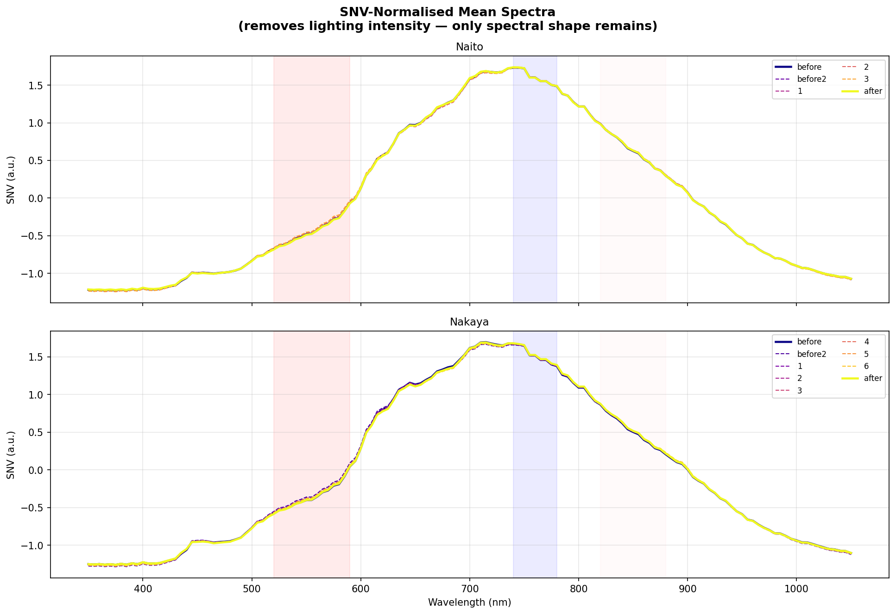
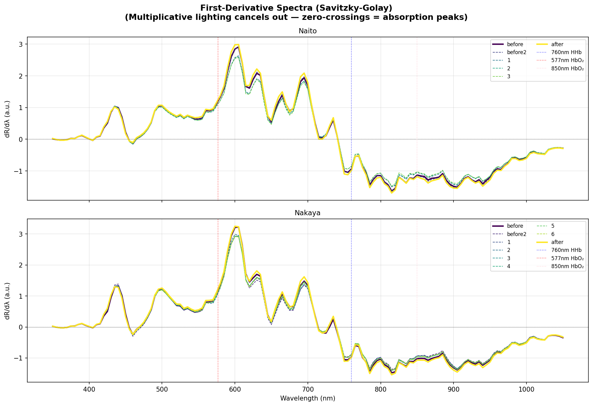
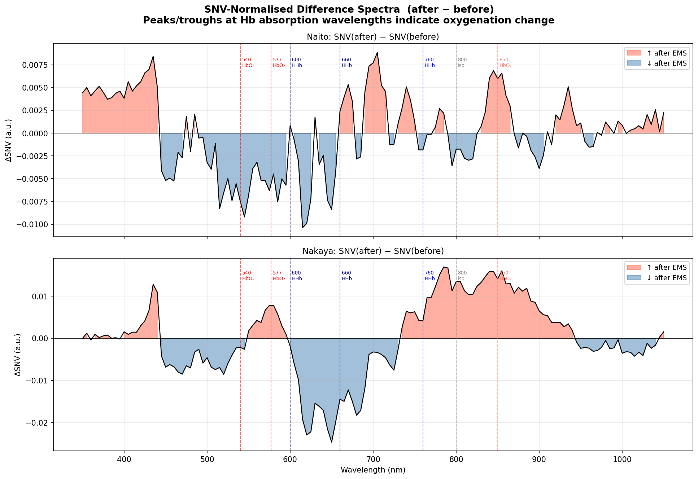

Subjects
Naito · Nakaya2 individuals
Two subjects. 141 wavelengths between 350–1050 nm. Captures before, during and after EMS. This brief walks the client through what we measured, what got in the way, and what one of the two subjects' spectra is quietly suggesting.
A normal camera sees three wavelengths — red, green, blue. The hyperspectral camera we used sees 141 wavelengths, sampled every 5 nm from 350 nm (near-UV) to 1050 nm (near-infrared).
The longer wavelengths penetrate a few millimetres into the dermis, which is where the small blood vessels live. If EMS changes how oxygenated blood flows under the skin, the absorption spectrum at those wavelengths should change shape. So we asked a simple question — drag the slider to scan the band — and recorded the answer 141 times per pixel.
Camera config · roko 2800 / gain 200 · back-of-torso framing · controlled indoor lighting.
Each subject was imaged at rest, twice, before EMS — then several times during stimulation with the EMS suit on — then once more immediately after the suit was removed. The back was the region of interest.
Healthy adults, back imaged from approximately 2 m, identical posture across sessions.
Each pixel is a full reflectance spectrum — not a colour.
Naito: 5 captures. Nakaya: 9 captures. Differences in protocol noted later.
Out of the 141 bands, we pull three (≈630, ≈530, ≈460 nm) to render a familiar colour image. This is purely a visual check that subjects are aligned and the camera fired correctly — the analysis itself uses all 141 bands.
The EMS suit only stimulates the back muscles. The room, the curtains, the chair, the subject's neck and arms — none of that should contribute to the spectrum.
So before averaging anything, we draw a binary mask around the back portion of each image (stored as a .npy boolean array, rendered here as a filled silhouette). The 141-band spectra are then averaged only over the white pixels of the mask.
Drag the handle to slide the mask overlay on or off the RGB.

FIG. 05 · NAKAYA, BEFORE — mask drawn over RGB
Our first instinct was simply to plot the average reflectance spectrum of the masked back at each time-point and compare them. Early on, the curves clearly shifted between "before" and "after" — and we briefly thought we were watching EMS at work.
Nakaya before EMS (left) versus Nakaya after EMS (right). Same subject, same room, same camera settings. But the room got brighter between the two sessions. Skin reflectance scales multiplicatively with incoming light — so the mean spectrum's amplitude shifted, not because of EMS but because of the lamp.

Brightness from a luma estimate of the masked region — visible to the eye.
If we can't trust the absolute brightness of the spectrum, we can still trust its shape. The two methods that follow both throw away absolute brightness on purpose and keep only the spectral shape. That's what we report on.
For every spectrum we subtract its own mean and divide by its own standard deviation, band by band. The result is a curve centred on zero and scaled to unit variance — its absolute brightness is gone, but its shape is preserved.
If a lamp brightens by 20 %, every R(λ) scales by 1.2 — but μ and σ scale by 1.2 too, and the ratio cancels. Two captures of the same back, lit differently, should now lie on top of each other. Any remaining difference between them is the tissue, not the room.

Instead of looking at the spectrum, we look at how fast it changes from one wavelength to the next — dR/dλ — after a light Savitzky-Golay smoothing.
Multiplicative lighting (constant × R) becomes a constant scale factor on the derivative; the positions of peaks and zero-crossings — which is where haemoglobin's absorption fingerprints sit — don't move. So if the oxygenation state actually changed, we should see those features shift.

Two intensity-invariant methods. Two null results. So far, EMS hasn't moved the spectrum in any way these shape-based summaries can detect.
If overlaying the curves shows them as identical, the obvious next step is to subtract them and look at what's left. We SNV-normalise both endpoints first — so lighting is already gone — then compute (after − before) at every wavelength.

More reflectance at a wavelength means less absorption by whatever Hb species dominates there — and vice versa. So a positive Δ at a wavelength where HHb (deoxy) is the main absorber implies less HHb after EMS. A negative Δ at that same wavelength implies more HHb after EMS.
Δ negative ⇒ reflectance ↓ ⇒ absorption ↑ ⇒ more HHb after.
Δ positive ⇒ absorption ↓ ⇒ less HHb after.
Δ positive ⇒ absorption ↓ ⇒ less HbO₂ after.
The difference oscillates around zero with no consistent pattern. Positive and negative excursions are similar in magnitude and don't line up coherently with haemoglobin landmarks. We read this as noise, not biology.
Roughly two to three times Naito's amplitude, and its excursions do land on Hb wavelengths. But the directions don't tell a clean story: 660 nm goes negative (more HHb after), 760 nm goes positive (less HHb after), and 850 nm goes positive (less HbO₂ after). 660 and 850 lean toward more deoxygenation; 760 contradicts. The Hb-shaped amplitude is real, but it does not validate an oxygenation-improvement story.
The biggest spectral feature in the dataset sits on Nakaya — but its direction map is contradictory. Not a confirmation of EMS effect; not a refutation either. Inconclusive.
Even with the SNV pivot, the dominant source of variance in this dataset is still ambient lighting. Nakaya carries the only Hb-scale feature in the data — but its directions don't line up into a clear oxygenation story. The protocol can be hardened so a v2 study can actually tell signal from noise.
A tighter framing of a smaller body region, a closer working distance, and a longer EMS exposure window would all shift the signal-to-noise balance heavily in our favour. Today's results — including Nakaya's Hb-scale but directionally mixed Δ — are at best inconclusive; that's the ceiling a v2 protocol needs to push well past.